ДКС-АТ1123.
Инструкция по настройке
-
Присвоить номер. В перечень записать дату, количество дозиметров отданных в настройку и ФИО регулировщика.
-
В полученные со сборки приборы всавить аккумуляторы, включить, подсоединить питание и поставить на приработку на 24 часа
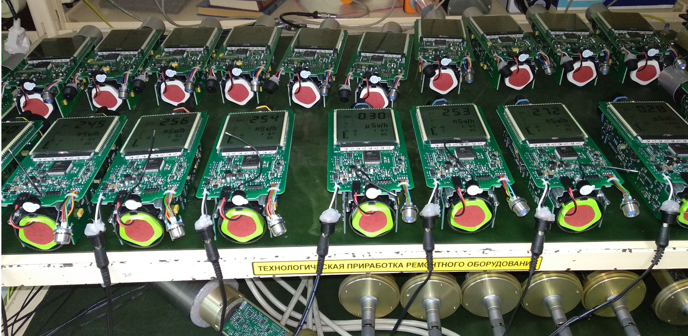 -
Проверить ток потребления: для этого замерить напряжение на R26 (мВ) и вписать значение в базу настроек, база сама высчитает ток:
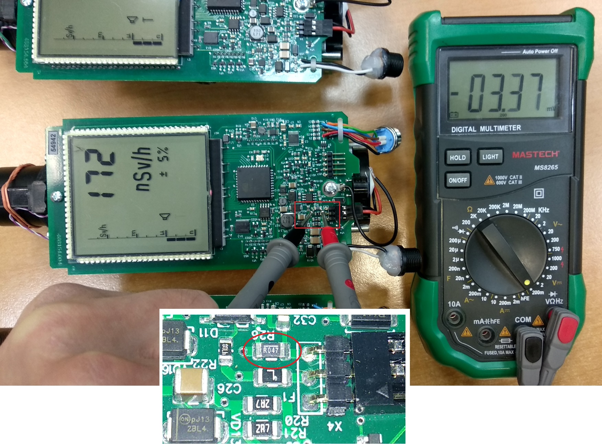 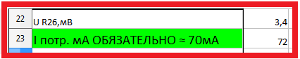 -
Записать номер и дату изготовления в память прибора.
- Подключить дозиметр к адаптеру USB 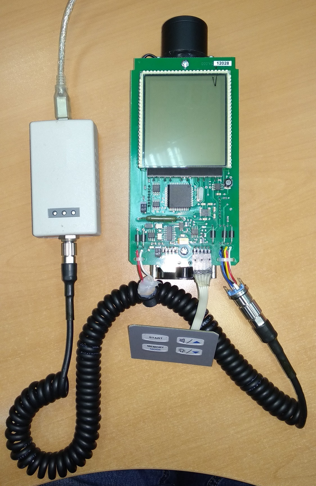
- Запустить программу BackgroundCalibration. Дозиметр подключится автоматически
- Нажать "Запись идентификационных данных" 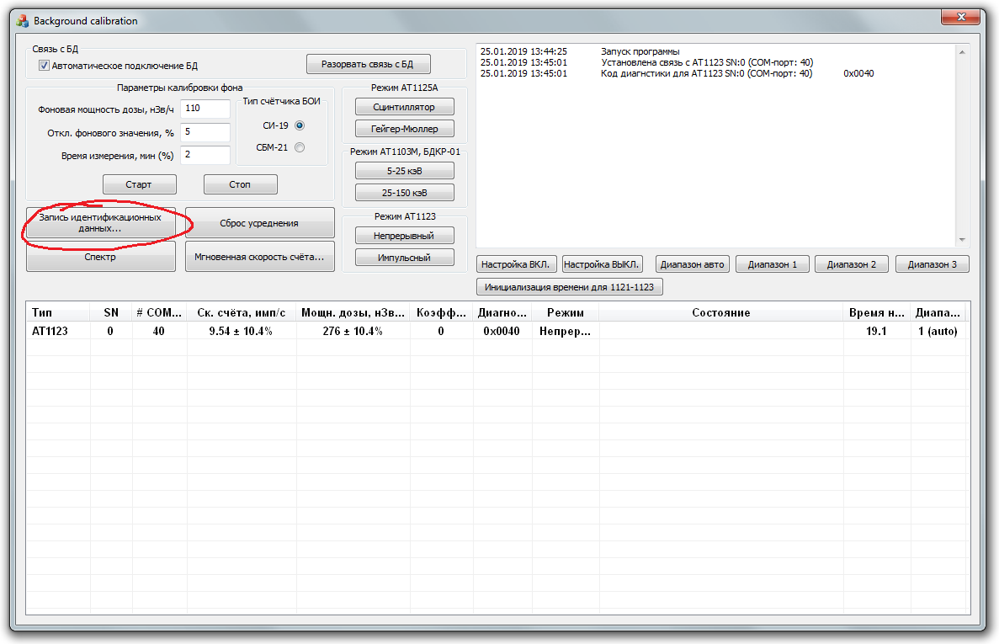
- Записать серийный номер, месяц и год производства
 Если перед тем, как нажать "Запись..." НЕ выделять строку с прибором, Background сам подставит сегодняшнюю дату
Если перед тем, как нажать "Запись..." НЕ выделять строку с прибором, Background сам подставит сегодняшнюю дату -
Перепроверить установленные коэффициенты:
- При включении нажать и удерживать кнопку
- Нажать три раза , на экране появится "---":
- Два раза нажать кнопку
- Набрать "718", для этого с помощью клавиш и выбирается цифра, а спомощью выбирается следующая позиция
- После ввода последней цифры, нажать
- Нажать и удерживать кнопку , появится ".1."
- Нажимая кнопку , выбрать пятый режим
- Переключение коэффициента осуществляется кнопкой , значение коэффициента изменяется кнопками и 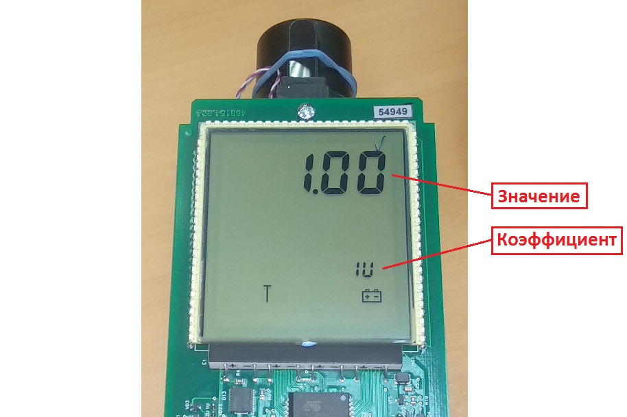
Должны стоять такие коэффициенты:
1U 1.0 2U 1.0 3U 1.0 4U 0 5U 0 -
Подстроечным резистором установить фоновые показания прибора. Для этого подстроечным резистором на плате преобразователя импульсов выставить 23 Ом.
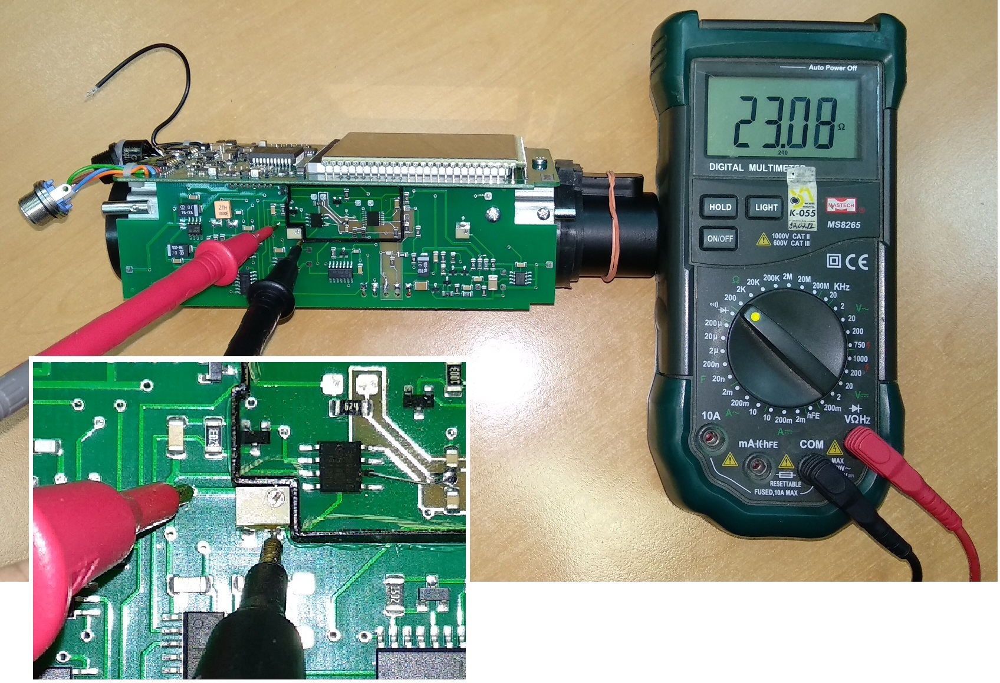 -
Установить Uвыс резисторами R18, R19 на плате преобразователя напряжения по показаниям от ОСГИ Cs137:
- Закрепить источник ОБЯЗАТЕЛЬНО латунной пластинкой к прибору 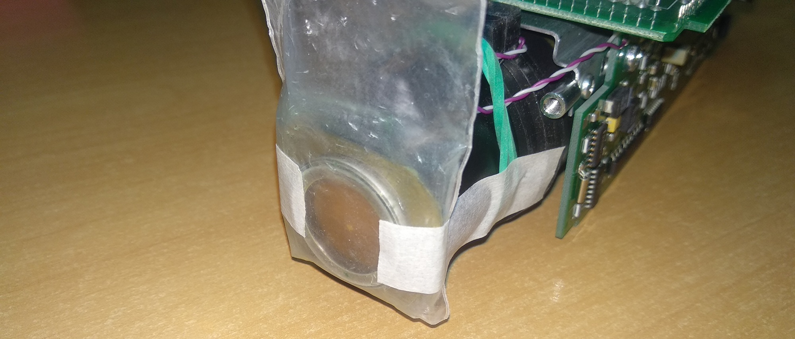
- Включить дозиметр
- С помощью подбора номинала резистора R18 (грубо) и регулировкой подстроечного резистора R19
(точно)
добиться показаний от источника Cs-137:
- от №2910 — 33 мкЗв/ч
- или от №516 — 45 мкЗв/ч
Значение мощности дозы для Cs135 №2910:
Значение мощности дозы для Cs135 №516 : - Проверить показания во втором диапазоне. Записать в базу настройку показания дозиметра в 1-м и 2-м диапазоне, сопротивление R18 и R19 ⇗
-
Проконтролировать напряжение и форму пробоя светодиода в 1 и 3 диапазоне. Для этого:
- Включить прибор, перейти в 3-ий диапазон
- С помощью осцилографа проверить сигнал светодиода. Максимум не должен привышать 100В: 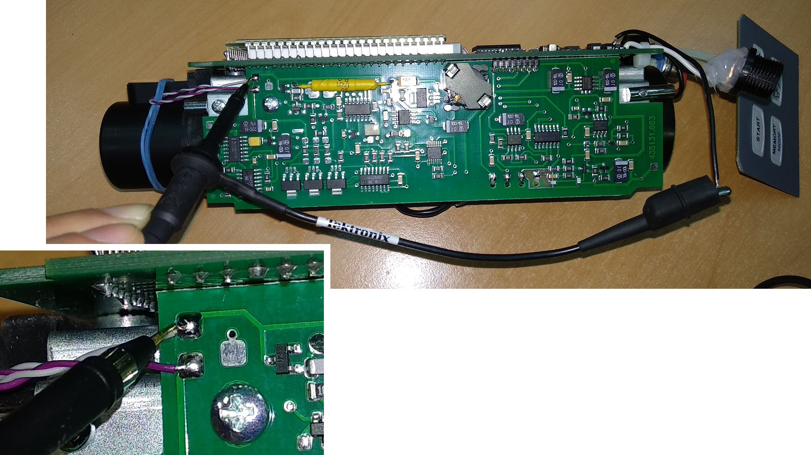 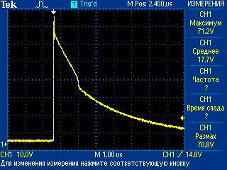
- То же сделать для 1-го диапазона
- С помощью мультиметра проверить напряжение на 1-ом выводе микросхемы D5. Напряжение не должно превышать 4.9В. 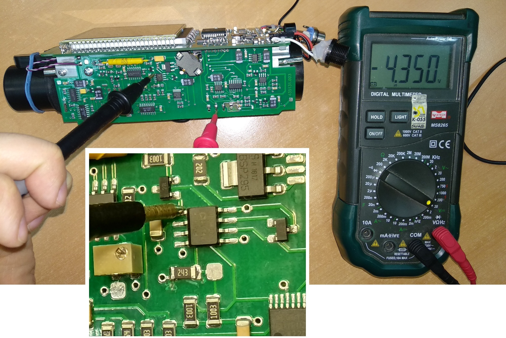
- То же сделать для 1-го диапазона. Если напряжение на 1-м выводе превышает 4.9В, следуе заменить резистор R37 на больший номинал 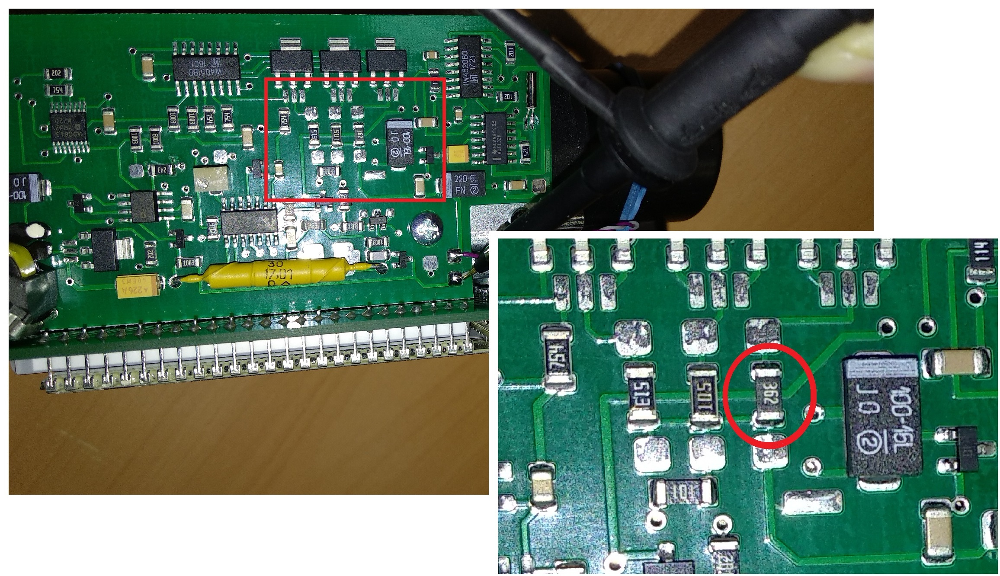
- Значение напряжения диода и напряжение на микросхеме для 3-го и 1-го диапазона записать в базу настройки ⇗
-
Проверить отсутствие показаний прибора в непрерывном и импульсном режиме во 2 и 3 диапазоне.
- Нажать и удерживать кнопку . На экране появится ".2."
- Нажать дважды , на экране появится ".4.", и сразу же символ режима работы: 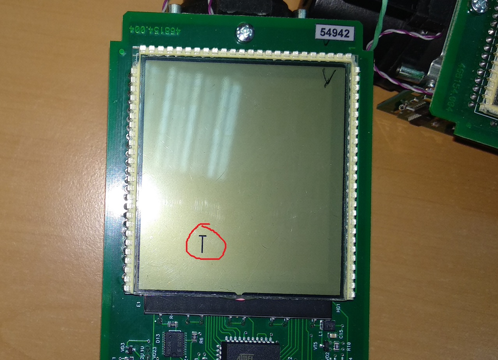
- с помощью клавиш и выбрать нужный режим, где:
- Нажать .
После проверки показаний в непрерывном и импульсном режиме, обязательно переключить прибор в непрерывный режим, вся настройка проводится именно в этом режиме
-
Проверить высокое
- Мультиметром замерить напряжение на высоком (в 1-м диапазоне) 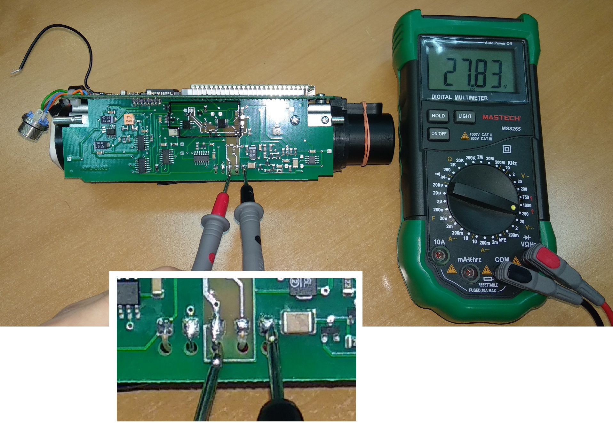
- Записать в базу настройки в ячейку "Uвыс. I диап, В /дин" полученное напряжение ⇗ 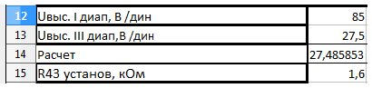
- В ячейке "Расчет" отобразится значение напряжения на высоком в 3-м диапазоне
- Переключится в 3-й диапазон и сравнить напряжение на высоком с расчетным
- Если напряжение примерно совпало, идём дальше, если нет — корректируем. Для этого необходимо подобрать резистор R43 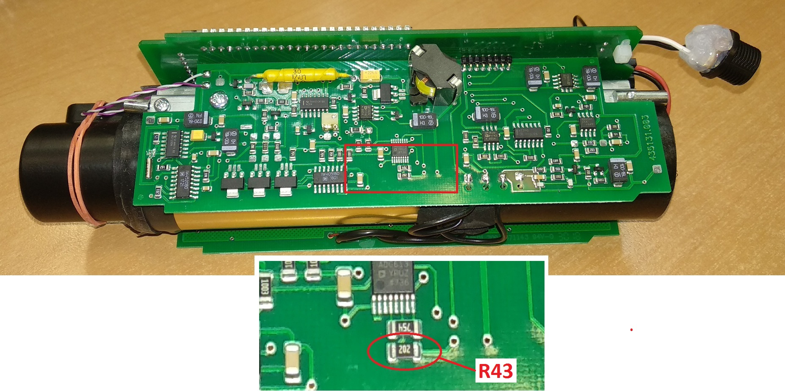
- Записать в базу настройки напряжение высокого в 3-ем диапазоне ⇗
- Записать в базу настройки номинал резистора R43 ⇗
-
Установить показания прибора от ОСГИ Сd109 1079:
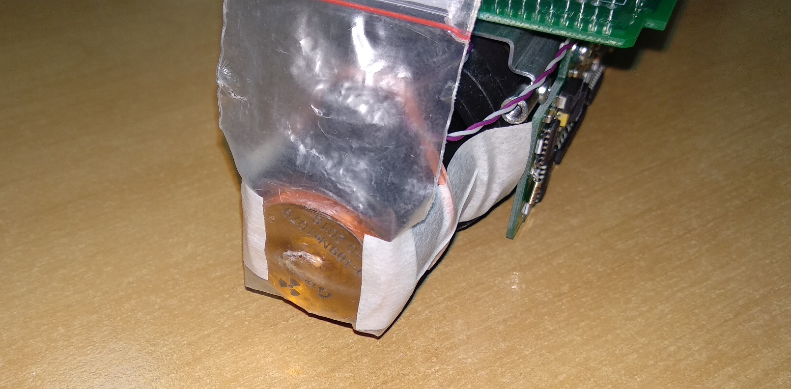- Закрепить источник ОСГИ Сd109 1079 на колпачок
- С помощью резистор R16 (грубо) и подстроечного R17 добиться такого значения мощности дозы:
- Следует учитывать, что изменение сопротивления резисторов очень сильно изменяют значение мощности дозы. Так, чтобы изменить значение мд на 20мкЗв, достаточно будет просто выкрутить подстроечный резистор, без перепайки резистора
- Чтобы увеличить значение м.д. сопротивление резистора нужно уменьшить, и наоборот
- Записать в базу настройки номиналы R16 и R17, значение м.д. от Cd109 ⇗ 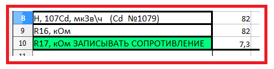
Значение мощности дозы для Cd-109: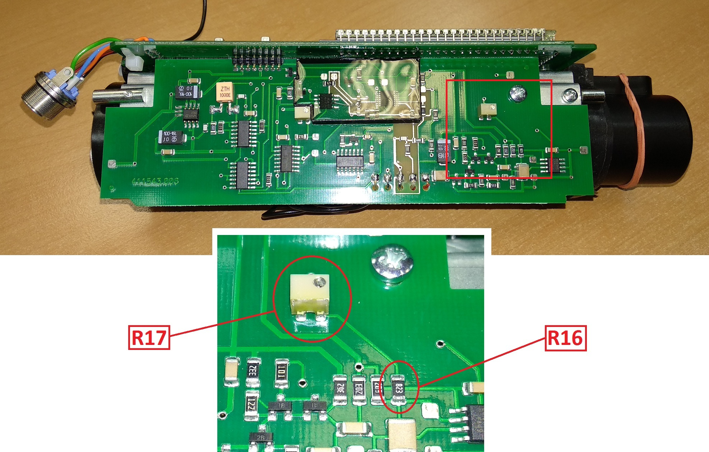 -
Осцилографом проконтролировать число импульсов сигнала «МВ» на фоне ≈10-15 имп.
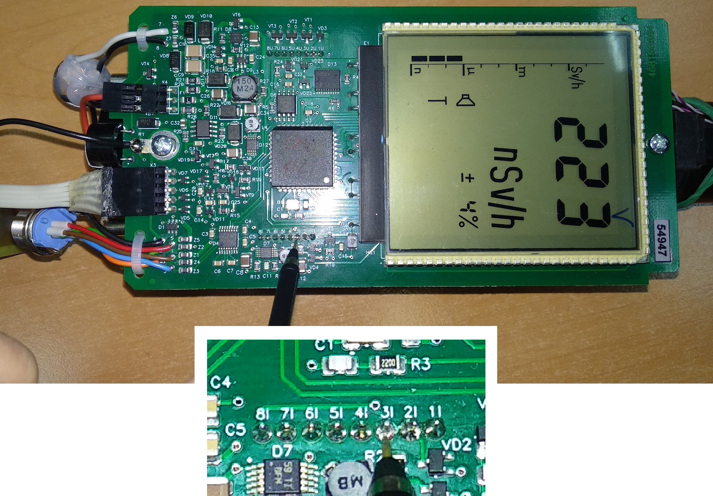 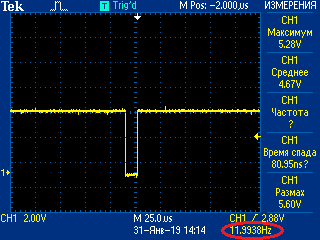 -
Перепроверить показания по Сs137 и напряжение на D5.1 в 3 диапазоне на плате преобразователя напряжения (см. пункт 6 и 7).
-
Проверить время наработки — должно быть НЕ МЕНЕЕ 100 ЧАСОВ
Чтобы проверить часы наработки:
- Включить прибор, при включении зажать
- На экране появится: 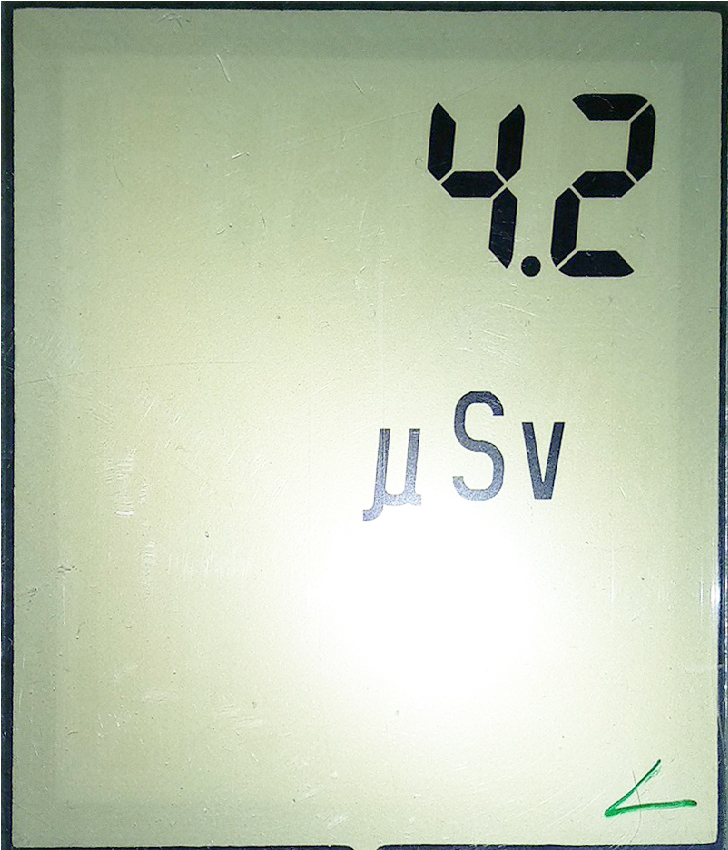
- нажать , на экране появятся часы наработки. 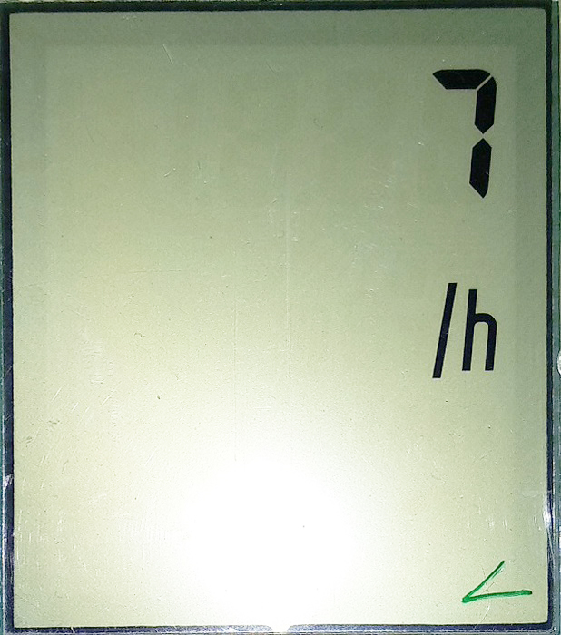
- Часов наработки должно быть НЕ МЕНЕЕ 100
- Если меньше, поставить включенными на стелаж прирабатываться до 100 часов
-
Зарядить и отдать на УДГ.
-
При использовании ДКС-АТ1123 в составе СРК-ЛУЭ заменить R20 R21 с номинала 2,7 Ом на 12 Ом (ограничение по заряду≈100мА, дополнительных перепрошивок прибора НЕ ТРЕБУЕТСЯ)